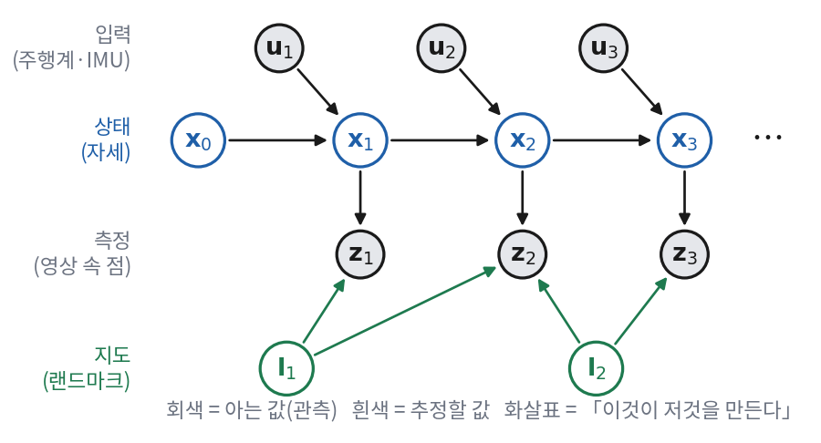
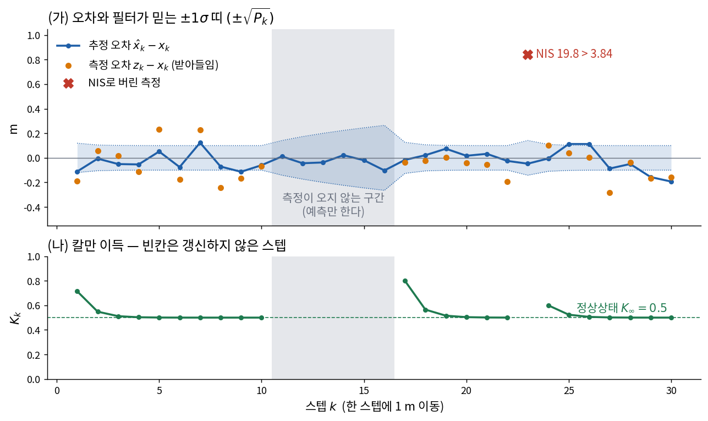
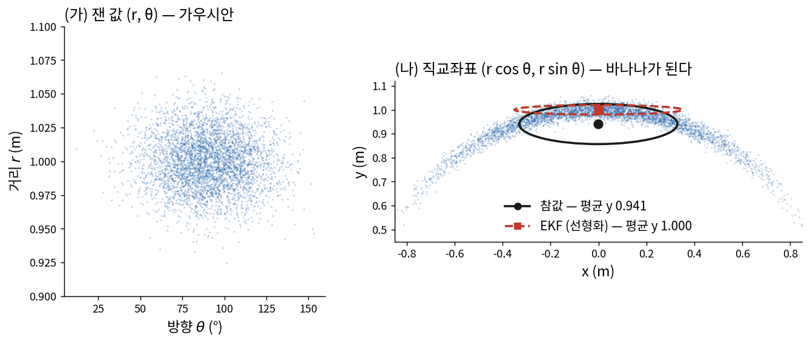
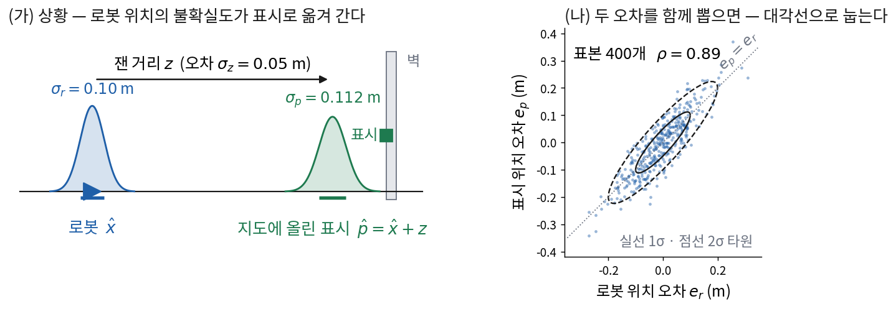
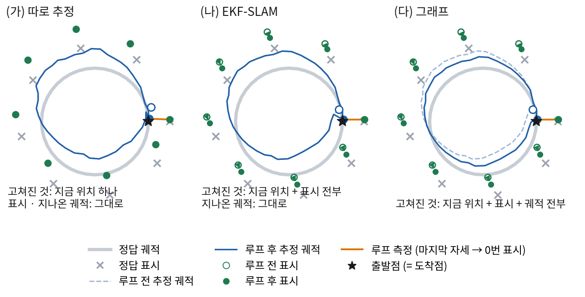
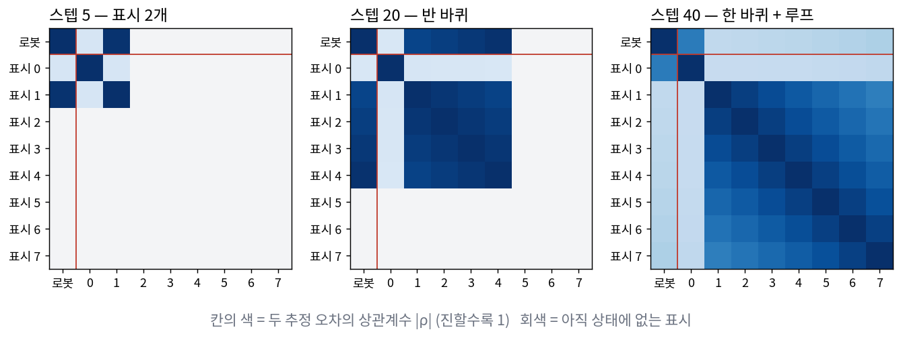
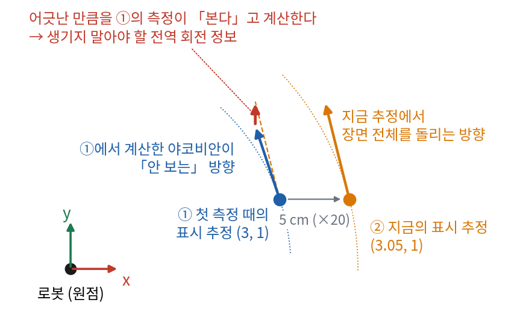

분포가 가우시안이면 갱신의 곱셈이 왜 최소제곱 문제가 되고, 그 답이 왜 칼만 필터의 일곱 줄인가?
칼만 필터의 각 줄은 무슨 뜻이고, 쓰는 사람은 무엇을 정해야 하나? 모형이 비선형이면(EKF) 무엇이 달라지나?
지도를 상태에 넣으면(EKF-SLAM) 무엇이 좋아지고 무엇이 무너지나?
6회에서 SLAM 40년을 이야기로 훑었다. 시스템 이름이 수십 개 나왔지만, 그 밑에 깔린 수학적 틀은 사실 두 개뿐이었다.
하나는 지금 상태만 들고 다니며 측정이 올 때마다 고치는 틀(필터)이고,
다른 하나는 지나온 상태를 모두 들고 한꺼번에 다시 푸는 틀(최적화)이다.
오늘은 첫째를, 8회에는 둘째를 다룬다.
3부에서 VINS-Mono를 뜯어볼 때 나오는 식은 전부 이 두 회차의 식에 무엇을 갈아 끼운 것이다.
오늘 유도는 칼만 필터와 EKF의 알고리즘을 얻는 데 필요한 만큼만 한다 — 확률의 곱을 가우시안으로 쓰고, 그것을 최소제곱으로 푸는 한 줄기다.
나머지 시간은 그 알고리즘의 각 줄이 무슨 뜻인지, 쓸 때 무엇을 정해야 하고 돌리면 어떻게 되는지에 쓴다.
Probabilistic Robotics는 Sebastian Thrun · Wolfram Burgard · Dieter Fox가 2005년에 낸 로봇 확률 추정 교과서로, 오늘과 8회 내용의 원전이다.
그 책은 \(R\)과 \(Q\)를 칼만 필터 교재와 정반대로 쓴다. 두 책을 같이 보다가 가장 먼저 헷갈리는 자리라서 미리 적어 둔다.
① SLAM을 확률로 세운다
로봇이 무엇을 「안다」는 것은 무슨 뜻일까? 1회에서 IMU만으로 적분한 궤적은 10초 만에 12 m를 벗어났다.
그 궤적의 한 점을 두고 「로봇은 여기 있다」라고 말하는 것은 정직하지 않다. 정직한 말은
「로봇은 이 근처 어딘가에 있고, 이쪽일 가능성이 가장 크다」에 가깝다.
그 「어딘가」와 「가능성」을 한꺼번에 담는 그릇이 확률분포다.
SLAM에 등장하는 양은 네 종류다. 아는 것 둘과 모르는 것 둘이다.
양
아는가
EuRoC에서는
입력 \(\mathbf{u}_k\)
안다 (잡음 섞인 채로)
IMU의 가속도·각속도 (10회)
측정 \(\mathbf{z}_k\)
안다 (잡음 섞인 채로)
영상에서 찾은 특징점의 픽셀 좌표 (4·5회)
상태 \(\mathbf{x}_k\)
모른다
몸체의 자세 \(T_{WB}\), 속도, 바이어스
랜드마크 \(\mathbf{l}_j\)
모른다
그 특징점이 가리키는 3차원 점
아는 것과 모르는 것을 잇는 식이 두 개 있다. 하나는 상태가 어떻게 변하는가, 다른 하나는 상태가 측정을 어떻게 만드는가다.
잡음 \(\mathbf{w}\)와 \(\mathbf{v}\)가 있기 때문에 이 두 식은 확률분포로 다시 쓸 수 있다.
「\(\mathbf{x}_{k-1}\)과 \(\mathbf{u}_k\)를 알면 \(\mathbf{x}_k\)는 \(f(\mathbf{x}_{k-1},\mathbf{u}_k)\) 둘레에 \(Q_k\)만큼 퍼져 있다」는 뜻이다.
평균 \(\boldsymbol\mu\), 공분산 \(\Sigma\)인 가우시안 분포를 \(\mathbf{a}\)에서 잰 밀도. 식은 ④절에서 쓴다. 세미콜론 앞이 변수, 뒤가 모수다.
우도 (likelihood)
\(p(\mathbf{z}\mid\mathbf{x})\)를 \(\mathbf{z}\)는 이미 잰 값으로 고정하고 \(\mathbf{x}\)의 함수로 볼 때 부르는 이름. 「상태가 이랬다면 지금 측정이 나올 법했나」를 잰다. \(\mathbf{x}\)에 대해 적분해도 1이 되지 않는다 — 확률분포가 아니라 함수다.
그래픽 모델 (graphical model)
확률변수를 동그라미로, 「무엇이 무엇을 만드나」를 화살표로 그린 그림. 아래 그림처럼 그리면 어느 변수가 어느 변수에 직접 의존하는지가 한눈에 보인다.

SLAM의 그래픽 모델. 회색은 아는 값(입력과 측정), 흰색은 추정할 값(상태와 랜드마크)이다.
\(\mathbf{x}_k\)로 들어오는 화살표는 \(\mathbf{x}_{k-1}\)과 \(\mathbf{u}_k\) 둘뿐이고, \(\mathbf{z}_k\)로 들어오는 화살표는 그때의 상태와 그때 본 랜드마크뿐이다.
②절의 「마르코프 가정」 두 개가 이 그림의 화살표 모양 그 자체다.
그럼 「SLAM을 푼다」는 것은 무엇을 구하는 것인가? 아는 것을 모두 조건으로 놓고, 모르는 것의 분포를 구하는 것이다.
무엇까지를 「모르는 것」에 넣느냐에 따라 두 판이 있다.
$$
\begin{aligned}
&p(\mathbf{x}_k,\ \mathbf{l}_{1:N} \mid \mathbf{z}_{1:k},\ \mathbf{u}_{1:k})
&&\text{Online SLAM — 지금 상태와 지도} \\
&p(\mathbf{x}_{0:k},\ \mathbf{l}_{1:N} \mid \mathbf{z}_{1:k},\ \mathbf{u}_{1:k})
&&\text{Full SLAM — 지나온 궤적 전체와 지도}
\end{aligned}
$$
\(\mathbf{z}_{1:k}\)는 \(\mathbf{z}_1, \dots, \mathbf{z}_k\)를 모두 모은 것을 줄여 쓴 것이다.
오늘의 필터는 Online SLAM을, 8회의 최적화는 Full SLAM을 푼다.
둘의 차이는 \(\mathbf{x}_{0:k-1}\)을 분포에 남겨 두느냐 지워 버리느냐 하나다. ⑧절에서 이 「지우기」가 정확히 무슨 연산인지 본다.
이 절부터 ⑥절까지는 식을 간단히 하려고 랜드마크를 상태 안에 넣었다고 보고 \(\mathbf{x}_k\) 하나만 쓴다.
로봇 위치추정(localization)이면 지도를 이미 알고 있는 경우이고, SLAM이면 \(\mathbf{x}_k\) 안에 랜드마크가 들어 있는 경우다(⑦절).
② 확률의 네 규칙
필터의 식은 놀랍게도 아래 네 규칙만으로 나온다. 확률을 배운 적이 있어도, ③절의 유도에서 어느 줄이 어느 규칙을 쓰는지
짚을 수 있도록 이름을 붙여 한 번 정리해 둔다.
규칙 1 — 곱셈법칙. 두 사건이 함께 일어날 확률은 「하나가 일어날 확률 × 그것이 일어났을 때 다른 하나가 일어날 확률」이다.
분모 \(p(b)\)는 \(a\)와 상관없는 상수다. 그래서 흔히 정규화 상수 \(\eta\)로 묶어 두고,
「우도와 사전을 곱한 다음 전체 합이 1이 되게 나눈다」고 읽는다. 둘째 줄 분모의 적분이 바로 규칙 2다.
규칙 4 — 조건부 독립. \(c\)를 알면 \(b\)가 \(a\)에 대해 더 알려 주는 것이 없을 때, \(b\)를 조건에서 뺄 수 있다.
$$
p(a \mid b,\, c) = p(a \mid c)
\qquad \Longleftrightarrow \qquad
p(a,\, b \mid c) = p(a \mid c)\, p(b \mid c)
$$
SLAM에서 쓰는 조건부 독립은 두 개이고, 둘 다 위 그림의 화살표 모양에서 읽힌다. 이 둘을 마르코프 가정이라고 부른다.
$$
\begin{aligned}
p(\mathbf{x}_k \mid \mathbf{x}_{0:k-1},\ \mathbf{z}_{1:k-1},\ \mathbf{u}_{1:k}) &= p(\mathbf{x}_k \mid \mathbf{x}_{k-1},\ \mathbf{u}_k)
&&\text{(M1) 지금 상태는 바로 앞 상태와 지금 입력만 안다} \\
p(\mathbf{z}_k \mid \mathbf{x}_{0:k},\ \mathbf{z}_{1:k-1},\ \mathbf{u}_{1:k}) &= p(\mathbf{z}_k \mid \mathbf{x}_k)
&&\text{(M2) 지금 측정은 지금 상태만 본다}
\end{aligned}
$$
🆕 Bayes · Markov — 사람 이름이다
Thomas Bayes (1701?~1761)
영국의 장로교 목사이자 수학자. 규칙 3에 해당하는 생각을 적은 글이 그가 죽은 뒤 1763년에 친구 Richard Price를 통해 발표됐다. 지금 쓰는 일반적인 꼴은 프랑스의 Laplace가 정리했다.
Andrey Markov (1856~1922)
러시아의 수학자. 「다음 상태가 지금 상태에만 달려 있는」 확률 과정을 연구했고, 그런 과정을 그의 이름을 따 마르코프 과정(Markov process)이라고 부른다.
마르코프 가정은 「참」이 아니라 「상태를 잘 고르면 참이 되는」 가정이다.
예를 들어 상태에 속도를 넣지 않으면 지금 위치를 알려면 지난 두 위치가 필요해서 M1이 깨진다.
IMU 바이어스를 상태에 넣지 않으면 바이어스가 측정마다 공통으로 끼어 M2가 깨진다(10회).
그래서 상태를 정한다는 것은 M1·M2가 성립하도록 필요한 것을 다 넣는다는 뜻이다.
1회에서 「상태 정의는 사람이 한다」고 했던 이유가 이 두 줄에 있다.
③ 베이즈 필터의 유도
측정이 하나씩 들어올 때마다 지금 상태의 분포를 처음부터 다시 계산하지 않고
바로 앞의 결과만 고쳐서 얻을 수는 없을까? 그것을 가능하게 하는 것이 베이즈 필터다.
먼저 두 가지 「믿음」을 정의한다.
마지막 갱신 뒤 6번 칸은 0.222, 처음 세 문 칸 중 나머지 둘(3 · 14)은 0.085다.
단 두 번의 측정으로 「셋 중 하나」가 「여기일 가능성이 다른 곳의 2.6배」로 바뀌었다.
격자 필터는 정확하지만 차원이 늘면 쓸 수 없다.
3차원 위치와 3차원 회전을 칸 100개씩으로 나누면 칸이 \(100^6 = 10^{12}\)개다.
랜드마크까지 상태에 넣으면 말할 것도 없다. 그래서 실제 SLAM은 둘 중 하나를 고른다 —
분포의 모양을 가우시안으로 못박고 평균·공분산만 들고 다니거나(⑤·⑥절),
분포를 표본 몇 백~몇 천 개로 대신하거나(파티클 필터 — 6회의 FastSLAM). 오늘은 앞의 길을 간다.
④ 가우시안 — 필터에 필요한 네 가지
왜 하필 가우시안일까? 측정 잡음이 실제로 가우시안에 가깝다는 이유도 있지만, 더 큰 이유는
베이즈 필터의 두 연산(적분과 곱셈)을 해도 다시 가우시안이 된다는 성질이다.
그래서 평균과 공분산 두 개만 들고 다니면 분포 전체를 들고 다니는 것과 같다.
이 절은 ⑤절의 유도에 쓰는 것만 네 가지 골라 둔다.
지수 안의 \((\mathbf{x}-\boldsymbol\mu)^\top \Sigma^{-1} (\mathbf{x}-\boldsymbol\mu)\)를 마할라노비스 거리의 제곱이라고 하고,
논문과 8회에서는 이것을 \(\lVert \mathbf{x}-\boldsymbol\mu \rVert^2_{\Sigma}\)로 줄여 쓰고, 최소제곱의 「가중치 붙은 제곱」이 바로 이것이다.
이 회차에서는 미분을 따라가기 쉽도록 줄이지 않고 \((\mathbf{x}-\boldsymbol\mu)^\top \Sigma^{-1} (\mathbf{x}-\boldsymbol\mu)\)로 풀어 쓴다.
이 값이 일정한 점들이 타원(3차원이면 타원체)을 이루고, 그 타원이 그림에서 늘 그리는 「1σ 타원」이다.
🆕 Gauss · Mahalanobis
Carl Friedrich Gauss (1777~1855)
독일의 수학자. 1809년 천체 궤도 계산에 관한 책에서 측정 오차가 이 분포를 따른다고 놓고 최소제곱법을 정당화했다. 그래서 가우시안과 최소제곱은 처음부터 한 몸이었다 — ⑤절의 갱신 유도와 8회의 출발점이 이것이다.
Prasanta Chandra Mahalanobis (1893~1972)
인도의 통계학자. 1936년에 공분산으로 나눠 잰 거리를 제안했다. 방향마다 퍼진 정도가 다르면 「같은 1 m」도 어떤 방향에서는 가깝고 어떤 방향에서는 멀다는 생각이다.
성질 1 — 선형변환해도 가우시안이다
\(\mathbf{x}\sim\mathcal{N}(\boldsymbol\mu, \Sigma)\)이고 \(\mathbf{y} = A\mathbf{x} + \mathbf{b}\)라고 하자(\(A\), \(\mathbf{b}\)는 정해진 상수). 평균은 기댓값의 선형성 — 상수는 기댓값 밖으로 나온다 — 으로 바로 나온다.
지수 안이 다시 「평균 \(A\boldsymbol\mu+\mathbf{b}\), 공분산 \(A\Sigma A^\top\)인 가우시안」의 꼴이다. 위에서 구한 평균·공분산과 정확히 맞는다.
(\(A\)가 정사각이 아니어도 결론은 같다 — 성질 3이 그 한 예다.)
칼만 필터의 예측이 이 성질이다.
성질 2 — 독립인 가우시안의 합도 가우시안이고, 공분산이 더해진다
\(\mathbf{x}\sim\mathcal{N}(\boldsymbol\mu, \Sigma)\)와 \(\mathbf{w}\sim\mathcal{N}(\mathbf{0}, Q)\)가 독립이라고 하자. 합의 평균은 평균의 합이다.
「모르는 정도」가 서로 얽히지 않고 그대로 쌓인다는 뜻이다.
합의 모양이 가우시안이라는 것은 성질 1로 보인다. 독립이면 결합 밀도는 두 밀도의 곱이라 지수 안이 더해지고, 그 합은 \(\mathbf{x}\)와 \(\mathbf{w}\)를 쌓은 벡터의 이차식이다 — 쌓은 벡터가 가우시안이다.
\(\mathbf{x}+\mathbf{w}\)는 그 벡터에 행렬 \([\,I\ \ I\,]\)를 곱한 것이므로 성질 1에 따라 가우시안이고, 공분산도 같은 답이 나온다.
$$
\mathbf{x}+\mathbf{w} = \begin{bmatrix} I & I \end{bmatrix}\begin{bmatrix}\mathbf{x}\\ \mathbf{w}\end{bmatrix},
\qquad
\begin{bmatrix} I & I \end{bmatrix}
\begin{bmatrix} \Sigma & 0 \\ 0 & Q \end{bmatrix}
\begin{bmatrix} I \\ I \end{bmatrix}
= \begin{bmatrix} \Sigma & Q \end{bmatrix}\begin{bmatrix} I \\ I \end{bmatrix}
= \Sigma + Q
$$
성질 3 — 일부만 보려면 그 블록만 떼면 된다
두 덩이 \(\mathbf{a}\), \(\mathbf{b}\)를 한 벡터로 쌓은 결합 가우시안을 이렇게 쓴다.
\(\mathbf{b}\)를 적분해 지우면(주변화, 규칙 2) \(\mathbf{a}\sim\mathcal{N}(\boldsymbol\mu_a, \Sigma_{aa})\)이다.
\(\mathbf{a}\)는 쌓은 벡터에서 위 덩이만 고른 것이므로 성질 1에서 \(A = [\,I\ \ 0\,]\)로 놓으면 된다.
$$
\mathbf{a} = \begin{bmatrix} I & 0 \end{bmatrix}\begin{bmatrix}\mathbf{a}\\ \mathbf{b}\end{bmatrix},
\qquad
A\Sigma A^\top
= \begin{bmatrix} I & 0 \end{bmatrix}
\begin{bmatrix}\Sigma_{aa} & \Sigma_{ab}\\ \Sigma_{ba} & \Sigma_{bb}\end{bmatrix}
\begin{bmatrix} I \\ 0 \end{bmatrix}
= \begin{bmatrix}\Sigma_{aa} & \Sigma_{ab}\end{bmatrix}\begin{bmatrix} I \\ 0 \end{bmatrix}
= \Sigma_{aa}
$$
⑦절의 EKF-SLAM에서 상태에 랜드마크가 수백 개 들어 있어도, 랜드마크 하나의 불확실도는 \(P\)에서 그 블록만 읽으면 된다.
성질 4 — 지수 안이 이차식이면 가우시안이다
거꾸로 물어 보자. 어떤 분포가 \(p(\mathbf{x}) \propto \exp\!\big(-J(\mathbf{x})\big)\) 꼴이고 \(J\)가 \(\mathbf{x}\)의 이차식이라면, 그 분포의 평균과 공분산은 무엇일까?
\(J\)를 이차항 · 일차항 · 상수로 나눠 쓰고 완전제곱한다. \(\Lambda\)는 대칭이고 양의 정부호라고 둔다.
이것을 최적화의 말로 다시 읽을 수 있다. \(J\)의 기울기 \(\nabla J = \Lambda\mathbf{x} - \boldsymbol\eta\)를 0으로 놓은 점이 \(\Lambda^{-1}\boldsymbol\eta\)이고,
\(J\)를 두 번 미분한 헤시안이 \(\Lambda\)다. 정리하면 이렇다.
\(p \propto e^{-J}\)이고 \(J\)가 이차식이면 — 평균은 \(J\)를 최소로 하는 점, 공분산은 \(J\)의 헤시안의 역이다.
확률에서 「가장 그럴듯한 점과 그 퍼짐」을 찾는 문제가 「이차식의 최소점과 그 굽은 정도」를 찾는 문제로 바뀐다.
방향을 거꾸로 하면 가우시안 하나의 \(-\log\)는 \(\tfrac12(\mathbf{x}-\boldsymbol\mu)^\top\Sigma^{-1}(\mathbf{x}-\boldsymbol\mu) + \text{상수}\) — 마할라노비스 제곱의 절반이다.
⑤절의 갱신 유도는 이 두 문장만으로 끝난다.
\(\Lambda\)를 정보행렬, \(\boldsymbol\eta\)를 정보벡터라고 부르고, 가우시안을 \((\boldsymbol\mu, \Sigma)\) 대신
\(p(\mathbf{x}) \propto \exp\!\big(-\tfrac12\mathbf{x}^\top\Lambda\mathbf{x} + \boldsymbol\eta^\top\mathbf{x}\big)\)로 들고 다니는 것을 정보 형식(information form)이라고 한다.
공분산이 크면(잘 모르면) 정보가 작고, 공분산이 작으면 정보가 크다. 8회는 처음부터 끝까지 이 \(\Lambda\)로 이야기한다.
굵은 \(\boldsymbol\eta\)는 ②절의 정규화 상수 \(\eta\)와 다른 것이다.
⑤ 칼만 필터(KF)
이제 베이즈 필터의 두 줄에 가우시안을 넣어 보자. 필요한 가정은 세 개다.
운동 모델이 선형: \(\mathbf{x}_k = F_k\mathbf{x}_{k-1} + B_k\mathbf{u}_k + \mathbf{w}_k\)
측정 모델이 선형: \(\mathbf{z}_k = H_k\mathbf{x}_k + \mathbf{v}_k\)
잡음 \(\mathbf{w}_k\sim\mathcal{N}(\mathbf{0},Q_k)\), \(\mathbf{v}_k\sim\mathcal{N}(\mathbf{0},W_k)\)가 서로 독립이고, 처음 믿음 \(\mathrm{bel}(\mathbf{x}_0)\)도 가우시안
\(B_k\mathbf{u}_k\)는 입력이 상태를 얼마나 바꾸는지를 나타내는 항이다(예: 「1 m 가라」면 위치에 1을 더한다).
이 가정 아래에서 믿음은 매 스텝 가우시안으로 남고, 그 평균과 공분산이 어떻게 바뀌는지가 칼만 필터다.
예측 — 성질 1과 2
\(\mathrm{bel}(\mathbf{x}_{k-1}) = \mathcal{N}(\hat{\mathbf{x}}_{k-1}, P_{k-1})\)라고 하자. 예측의 적분 \(\int p(\mathbf{x}_k\mid\mathbf{x}_{k-1},\mathbf{u}_k)\,\mathrm{bel}(\mathbf{x}_{k-1})\,d\mathbf{x}_{k-1}\)은
「\(\mathbf{x}_{k-1}\)을 뽑아 \(F_k\)를 곱하고 \(B_k\mathbf{u}_k\)를 더한 뒤, 독립인 잡음 \(\mathbf{w}_k\)를 더한 것」의 분포다. 성질 1·2를 차례로 쓴다.
갱신은 베이즈 필터의 둘째 줄 \(\mathrm{bel}(\mathbf{x}) = \eta\,p(\mathbf{z}\mid\mathbf{x})\,\overline{\mathrm{bel}}(\mathbf{x})\)이다. 아래첨자 \(k\)는 잠시 뗀다.
곱하는 두 분포가 모두 가우시안이다 — 예측 믿음은 방금 구했고, 측정 모델은 「\(\mathbf{x}\)이면 \(\mathbf{z}\)는 \(H\mathbf{x}\) 둘레에 \(W\)만큼 퍼진다」다.
정규화 상수는 \(\mathbf{x}\)와 무관하므로 \(\propto\)로 떼어 두고 지수만 본다.
\(J\)는 \(\mathbf{x}\)의 이차식이다. 그러니 성질 4에 따라 \(\mathrm{bel}\)은 가우시안이고,
평균은 \(J\)를 최소로 하는 점, 공분산은 \(J\)의 헤시안의 역이다.
분포가 가장 높은 점을 MAP(maximum a posteriori, 사후분포의 최댓값)라고 부르는데, 가우시안에서는 MAP와 평균이 같은 점이다.
즉 칼만 갱신은 가중 최소제곱 문제다 — 예측과 측정 사이에서, 각자 믿을 만한 만큼 무게(\((P^-)^{-1}\), \(W^{-1}\))를 주어 타협점을 찾는다.
최소점을 찾으려면 \(J\)를 \(\mathbf{x}\)로 미분해 0으로 놓는다. 이차형식의 미분은 스칼라 \(\tfrac12 m(x-a)^2 \to m(x-a)\)와 모양이 같다.
\(M\)이 대칭이면(공분산의 역은 늘 대칭이다) 다음 두 공식이면 충분하다.
$$
\begin{aligned}
\frac{\partial}{\partial\mathbf{x}}\Big[\tfrac12\,(\mathbf{x}-\mathbf{a})^\top M (\mathbf{x}-\mathbf{a})\Big] &= M(\mathbf{x}-\mathbf{a})
&&\text{스칼라의 } m(x-a) \\
\frac{\partial}{\partial\mathbf{x}}\Big[\tfrac12\,(\mathbf{z}-H\mathbf{x})^\top M (\mathbf{z}-H\mathbf{x})\Big] &= -H^\top M(\mathbf{z}-H\mathbf{x})
&&\text{연쇄법칙 — 괄호 안 }\mathbf{z}-H\mathbf{x}\text{를 미분하면 }-H
\end{aligned}
$$
첫 공식은 \(\mathbf{x}^\top M\mathbf{x}\)의 미분이 \((M + M^\top)\mathbf{x} = 2M\mathbf{x}\)라는 데서 나온다. 둘째는 첫 공식에 연쇄법칙을 한 번 더 쓴 것이다. 두 벌점에 하나씩 쓴다.
$$
\begin{aligned}
\nabla J(\mathbf{x})
&= (P^-)^{-1}(\mathbf{x}-\hat{\mathbf{x}}^-) - H^\top W^{-1}(\mathbf{z}-H\mathbf{x})
&&\text{첫 벌점에 첫 공식, 둘째 벌점에 둘째 공식} \\
&= (P^-)^{-1}\mathbf{x} - (P^-)^{-1}\hat{\mathbf{x}}^- - H^\top W^{-1}\mathbf{z} + H^\top W^{-1}H\mathbf{x}
&&\text{괄호를 푼다} \\
&= \underbrace{\big((P^-)^{-1} + H^\top W^{-1}H\big)}_{\Lambda}\,\mathbf{x}
- \underbrace{\big((P^-)^{-1}\hat{\mathbf{x}}^- + H^\top W^{-1}\mathbf{z}\big)}_{\boldsymbol\eta}
&&\mathbf{x}\text{가 붙은 항과 안 붙은 항으로 모은다}
\end{aligned}
$$
\(\nabla J = \Lambda\mathbf{x} - \boldsymbol\eta\) — 성질 4의 기울기와 똑같은 꼴이다. 이것을 0으로 놓은 점이 갱신 평균이고,
한 번 더 미분하면 \(\mathbf{x}\)가 붙은 항의 계수만 남으므로 헤시안이 \(\Lambda\)다.
갱신된 정보 = 예측의 정보 \((P^-)^{-1}\) + 측정의 정보 \(H^\top W^{-1}H\).
측정을 하나 받을 때마다 정보가 더해지기만 한다 — 측정이 불확실도를 키우는 일은 없다.
이 식은 이미 쓸 수 있는 알고리즘이다. 8회의 최적화는 이 꼴을 궤적 전체에 대해 그대로 쓴다.
그런데 필터에서는 이 꼴을 그대로 쓰지 않는다. \(\Lambda\)는 \(n\times n\)(상태 크기)이고 매 스텝 뒤집어야 하는데,
측정은 보통 상태보다 훨씬 작다(\(m \ll n\)). 그래서 \(n\times n\) 역행렬 대신 \(m\times m\) 역행렬 하나로 같은 답을 내는 꼴로 바꾼다.
무엇을 하려는지는 스칼라로 먼저 보면 분명하다. \(H = 1\)이고 \(P^-\), \(W\)가 숫자이면
정보 형식의 답은 분수 안에 분수가 든 꼴이다. 분자·분모에 \(P^-W\)를 곱해 정리하면 이렇게 된다.
스칼라에서는 「정보의 합」 \(1/P^- + 1/W\)을 뒤집는 대신 「불확실도의 합」 \(P^- + W\) 하나로 나누게 됐다. 이것이 \(m\times m\) 역행렬 \(S^{-1}\)의 정체다.
행렬에서도 똑같은 일을 한다. 나눗셈이 역행렬이 되어 곱하는 순서를 지켜야 할 뿐이다. 스칼라의 세 결과 — 「예측 + 고침」 꼴, \(K = P^-/(P^-+W)\), \(P = (1-K)P^-\) — 를 하나씩 행렬로 옮긴다.
① 평균을 「예측 + 고침」 꼴로. 스칼라의 셋째 줄처럼 \(\boldsymbol\eta\) 안의 \(\hat{\mathbf{x}}^-\) 항을 \(\Lambda\hat{\mathbf{x}}^-\)로 만든다. \(H^\top W^{-1}H\hat{\mathbf{x}}^-\)를 더하고 뺀다.
꼴은 「예측 + \(K\) × (잰 값 − 예측한 측정)」이 됐다. 그런데 \(K\) 안에 아직 \(\Lambda^{-1}\)이 남아 있다.
스칼라로 줄이면 \(K = \dfrac{1/W}{1/P^- + 1/W}\) — 분수 속 분수 그대로다. 이것을 정리하는 것이 다음 단계다.
② \(K\)에서 \(\Lambda^{-1}\)을 없앤다. 스칼라에서는 분자·분모에 \(P^-W\)를 곱했다. 행렬에서는 정리한 답 \(P^-H^\top(\,\cdot\,)^{-1}\)이 어떤 꼴일지 스칼라에서 짐작이 되므로,
\(P^-H^\top\)에 \(\Lambda\)를 곱해 보고 무엇이 나오는지 본다.
\(K = P^-H^\top S^{-1}\)이다. 스칼라로 줄이면 \(P^-/(P^- + W)\) — 위에서 본 그대로다. 남은 역행렬은 \(S^{-1}\) 하나이고, \(S\)는 측정 크기 \(m\times m\)다.
덤으로 첫 줄에서 \(\Lambda K = H^\top W^{-1}\)도 얻었다. ③에서 쓴다.
③ 공분산도 \(P^-\)로. 스칼라에서는 \(P = (1-K)P^-\)였다. 행렬에서도 \((I-KH)P^-\)가 \(\Lambda^{-1}\)인지 — 즉 \(\Lambda\)를 곱하면 \(I\)가 되는지 — 확인한다.
$$
\begin{aligned}
\Lambda\,(I - KH)\,P^-
&= \Lambda P^- - (\Lambda K)\,HP^-
&&\text{괄호를 푼다} \\
&= \Lambda P^- - H^\top W^{-1}HP^-
&&\Lambda K = H^\top W^{-1}\ \text{(②)} \\
&= \big((P^-)^{-1} + H^\top W^{-1}H\big)P^- - H^\top W^{-1}HP^-
&&\Lambda\text{를 펴 쓴다} \\
&= I + H^\top W^{-1}HP^- - H^\top W^{-1}HP^- = I
&&\text{둘째와 셋째 항이 지워진다} \\
\Longrightarrow\quad P = \Lambda^{-1} &= (I - KH)\,P^-
&&\Lambda\text{를 곱해 }I\text{가 되는 행렬이 곧 }\Lambda^{-1}
\end{aligned}
$$
유도는 여기서 끝이다. 자주 나오는 덩어리 셋에 이름을 붙인다 — 이렇게 만든 세 이름이 칼만 필터의 세 주인공이다.
$$
\begin{aligned}
\mathbf{y} &= \mathbf{z} - H\hat{\mathbf{x}}^-
&&\textbf{혁신 (innovation)}\text{: 잰 값과 예측한 측정의 차} \\
S &= HP^-H^\top + W
&&\textbf{혁신 공분산}\text{: 혁신이 얼마나 클 수 있나 = 예측의 불확실도 + 측정 잡음} \\
K &= P^-H^\top S^{-1}
&&\textbf{칼만 이득}\text{: 혁신을 상태의 고침으로 바꾸는 비율}
\end{aligned}
$$
🆕 Kalman — 사람 이름이다
Rudolf E. Kálmán (1930~2016)
헝가리 부다페스트에서 태어나 미국에서 활동한 수학자·공학자. 1960년 논문 A New Approach to Linear Filtering and Prediction Problems로 이 필터를 발표했다.
NASA Ames의 Stanley Schmidt가 이것을 비선형 궤도 문제에 맞게 고친 것(⑥절의 EKF)이 아폴로 우주선의 항법에 쓰였다.
두 꼴의 답이 같다(스크립트에서 차이는 0이다). 정보 형식으로 보면 뜻이 잘 보인다 —
예측의 정보 20과 측정의 정보 50을 더해 70이 되고, 평균은 두 값 3.0과 3.15를 정보로 가중평균한 것이다.
측정의 정보가 2.5배 크니 측정 쪽으로 더 끌려간다.
유도에서 본 대로 스칼라일 때 칼만 이득은 \(K = P^-/(P^-+W)\)이고, 이 예에서는 \(0.05/(0.05+0.02)\)였다.
\(W\to0\)(완벽한 센서)이면 \(K\to1\)이라 측정을 그대로 받고, \(W\to\infty\)(쓸모없는 센서)이면 \(K\to0\)이라 예측을 지킨다.
갱신 분산 \(P = P^-W/(P^-+W)\)는 \(P^-\)와 \(W\) 둘 중 어느 것보다도 작다 — 두 정보를 합쳤으니 당연하다.
쓰는 법 — 무엇을 정하고, 돌리면 어떻게 되나
칼만 필터를 실제 문제에 쓰려면 사람이 무엇을 정해야 할까? 일곱 줄 안에서 바뀌지 않는 것들이 전부 사람 몫이다.
정할 것
복도 예에서
어떻게 정하나 · 잘못 정하면
상태 \(\mathbf{x}\)
위치 하나
마르코프 가정 M1·M2가 성립하도록 필요한 것을 다 넣는다(②절). 빠뜨리면 모형이 어긋난 만큼 혁신이 한쪽으로 쏠린다
운동 모델 \(F, B\)
\(1, 1\)
물리 법칙이나 기구학에서 온다
측정 모델 \(H\)
\(1\)
센서가 상태의 무엇을 보는지
측정 잡음 \(W\)
0.02 m²
센서 사양서, 또는 가만히 둔 센서 출력의 분산으로 잰다 — 비교적 정하기 쉽다
운동 잡음 \(Q\)
0.01 m²
「운동 모델이 한 스텝에 얼마나 틀릴 수 있나」. 잴 수 없는 경우가 많아 조정(튜닝)의 주 대상이다
처음 \(\hat{\mathbf{x}}_0,\ P_0\)
2.0 m, 0.04 m²
모르면 \(P_0\)를 넉넉히 크게. 너무 작게 잡으면 처음 측정들을 무시한다
정한 대로 30 스텝을 돌려 보았다(src/filter_numbers.py ⑤). 로봇은 매 스텝 1 m 가라는 명령을 받고 실제로는 \(Q\)만큼 흔들리며 간다.
측정은 매 스텝 오지만 11~16번 스텝에는 오지 않고, 23번 스텝의 측정은 엉뚱하다(다른 벽을 잡아 1 m를 더 읽었다).
아래 그림은 추정 오차와, 필터가 스스로 믿는 \(\pm1\sigma\) 띠를 함께 그린 것이다.

3.84'라고 적혀 있다. 아래 그림: 칼만 이득이 0.71에서 시작해 0.5로 내려가고, 11~16과 23 스텝은 비어 있으며, 17 스텝에서 0.8로 뛰었다가 다시 0.5로 돌아간다">
(가) 측정이 꾸준히 오면 띠가 일정한 폭으로 자리 잡는다. 측정이 끊긴 구간(회색)에서는 예측만 해서 띠가 넓어지고, 측정이 돌아오자마자 좁아진다.
23번 스텝의 엉뚱한 측정(빨간 X)은 버려서 추정이 끌려가지 않았다. (나) 이득은 몇 스텝 만에 0.5로 자리 잡고, 띠가 넓어진 뒤에는 잠시 커진다.
① 이득은 무엇이 정하나 — 예측의 불확실도와 측정의 불확실도의 비.
스칼라(\(H = 1\))로 보면 이득의 식이 그대로 읽힌다.
$$
K = \frac{P^-}{P^- + W},
\qquad
P^- = \underbrace{P_{k-1}}_{\text{지난 갱신이 남긴 불확실도}} + \underbrace{Q}_{\text{이번 스텝의 운동 잡음}}
$$
\(P^-\)는 지난 갱신이 남긴 불확실도에 이번 운동이 \(Q\)를 보탠 것이다. 그 \(P_{k-1}\)도 한 스텝 전의 \(P^-\)에서 나왔으니,
거슬러 올라가면 \(P^-\)는 \(Q\)가 스텝마다 쌓이고 측정이 그때마다 깎아 낸 결과다.
그러니 이득은 「\(Q\)가 쌓아 온 예측의 불확실도 \(P^-\)」와 「측정 한 번의 불확실도 \(W\)」 사이의 비율로 정해진다.
\(P^-\)가 \(W\)보다 크면 \(K\)가 1에 가까워져 측정 쪽으로, 작으면 0에 가까워져 예측 쪽으로 간다.
\(P\)와 \(K\)의 식에는 잰 값 \(\mathbf{z}\)가 없으므로, 모델과 \(Q, W\)만 정해지면 이 흐름은 측정과 상관없이 미리 정해진다.
그림 (나)의 처음 몇 스텝을 이 식으로 따라가면 이렇다(src/filter_numbers.py ⑤). 처음 \(P_0 = 0.04\)가 커서 측정을 많이 받고, 그 뒤로 0.50에 다가간다.
스텝
\(P^- = P_{k-1} + Q\)
\(K = P^-/(P^- + W)\)
\(P = (1-K)\,P^-\)
1
0.04 + 0.01 = 0.0500
0.0500 / 0.0700 = 0.71
0.0143
2
0.0143 + 0.01 = 0.0243
0.0243 / 0.0443 = 0.55
0.0110
3
0.0110 + 0.01 = 0.0210
0.0210 / 0.0410 = 0.51
0.0102
어디서 멈출까? 매 스텝 예측이 \(Q\)를 더하고, 갱신이 \(P^- - P = KP^-\)를 깎는다.
둘이 같아지면 \(P^-\)가 더 이상 바뀌지 않는다. 이 자리의 이득을 정상상태 이득 \(K_\infty\)라고 한다.
확인해 보면 \(K_\infty P^- = 0.5\times0.02 = 0.01 = Q\)다. 이 정상상태에서 \(P^-\)와 \(W\)의 비를 정하는 것이 \(Q\)와 \(W\)의 비다.
셋째 줄을 \(W^2\)으로 나누면 \(r = P^-/W\)에 대한 식 \(r^2 - (Q/W)\,r - Q/W = 0\)이 되어, \(r\)는 \(Q/W\)만으로 정해지고 \(K_\infty = r/(1+r)\)도 그렇다.
아래 표는 \(W = 0.02\)를 두고 \(Q\)만 바꿔 본 것이다.
\(Q\) (m²)
\(Q/W\)
정상상태 이득 \(K_\infty\)
필터의 성격
0.0025
0.125
0.297
운동 모델을 믿는다 — 매끄럽지만 실제 움직임이 바뀌면 늦게 따라간다
0.01
0.5
0.500
지금 예
0.04
2
0.732
측정을 믿는다 — 빨리 따라가지만 측정 잡음을 그대로 받는다
\(Q\)와 \(W\)를 둘 다 2배로 키우면 쌓이는 \(P^-\)도 2배가 되어 \(P^-/W\)가 그대로이고, \(K_\infty\)는 0.5 그대로다. 이득을 정하는 것은 두 값의 크기가 아니라 비다.
그래서 튜닝은 보통 \(W\)를 센서에서 재 놓고 \(Q\)를 움직이며 한다. 크기 자체는 \(P\) — 필터가 말하는 불확실도 — 를 정하므로, 비만 맞고 크기가 틀리면 추정은 괜찮은데 \(P\)가 거짓말을 한다(아래 NEES).
② 측정이 안 오면 예측만 한다.
갱신 다섯 줄을 건너뛰고 \(\hat{\mathbf{x}} = \hat{\mathbf{x}}^-\), \(P = P^-\)로 둔다. 11~16번 스텝에서 \(P\)는 스텝마다 \(Q\)씩 커져 0.01에서 0.07로(표준편차 0.100 → 0.265 m) 넓어졌다.
17번 스텝에 측정이 돌아오자 \(P^-\)가 컸던 만큼 이득이 0.8로 커져 측정을 크게 받아들이고, \(P\)는 0.016으로 바로 줄었다.
실제 시스템에서는 이것이 예외가 아니라 일상이다. EuRoC는 IMU가 200 Hz, 카메라가 20 Hz라서 예측 열 번에 갱신 한 번이 기본 박자다.
측정이 여러 개 한꺼번에 오면 \(\mathbf{z}\), \(H\)를 세로로 쌓고 \(W\)를 블록 대각으로 놓아 한 번에 갱신하거나, 측정 잡음이 서로 독립이면 하나씩 차례로 갱신해도 같은 답이 나온다.
③ 이상한 측정은 혁신으로 거른다.
모형이 맞다면 혁신 \(\mathbf{y}\)는 평균 0, 공분산 \(S\)인 가우시안이다. 그래서 혁신을 \(S\)로 잰 마할라노비스 제곱 — 이것을 NIS라고 한다 — 은 대개 작다.
너무 크면 그 측정이 모형 밖에서 왔다고 보고 갱신하지 않는다. 이것을 gating이라고 부른다.
받아들였다면 \(0.5 \times 0.891 = 0.445\) m만큼 끌려갔을 것이다. 문턱 3.84는 「정상인 측정도 20번에 한 번은 넘는다」는 값이다.
문턱을 너무 낮추면 좋은 측정까지 버리고, 버린 만큼 \(P\)가 커져 다음 문턱 판정이 흔들린다. 측정이 2차원이면(픽셀 좌표) 문턱은 5.99다.
🆕 카이제곱 분포 · gating
카이제곱 분포 \(\chi^2_m\)
표준정규분포를 따르는 독립인 값 \(m\)개를 제곱해 더한 것의 분포. 평균이 \(m\)이다. \(\mathbf{y}^\top S^{-1}\mathbf{y}\)는 \(\mathbf{y}\)를 \(S\)로 「표준화」한 뒤 제곱해 더한 것이라 이 분포를 따른다. 95 % 점(자유도 1이면 3.84, 2이면 5.99)은 통계표에 있는 값이다.
gating
「문(gate)을 지나가는 측정만 들인다」는 뜻. 혁신이 \(S\)로 그린 타원 밖에 떨어진 측정을 들이지 않는 것이다. SLAM에서는 잘못 짝지어진 특징점(9회의 outlier)을 거르는 데 같은 생각을 쓴다.
필터가 맞게 도는지 — NIS · NEES
③의 NIS는 측정 하나를 거르는 데도 쓰지만, 필터 전체가 맞게 돌고 있는지를 재는 데도 쓴다. 모형이 맞다면 그 평균이 \(m\)이어야 한다.
정답 궤적이 있으면(EuRoC처럼) 추정 오차를 \(P\)로 잰 NEES도 쓸 수 있다.
위의 30 스텝에서 받아들인 측정 23개의 NIS 평균은 0.99로, 기대값 1과 잘 맞는다.
NEES의 평균이 \(n\)보다 크게 나오면 필터가 실제보다 자기를 더 확신하고 있다(과신, overconfident)는 뜻이고, 작으면 지나치게 겁을 내고 있다는 뜻이다.
이것이 ⑦절에서 말할 「일관성(consistency)」의 정의다 — 필터가 믿는 공분산이 실제 오차의 크기와 맞는가.
Joseph 형 — 같은 \(P\)를 다르게 계산하는 식
칼만 필터를 구현한 코드나 다른 교재를 보면 갱신 공분산이 \((I-KH)P^-\)가 아니라 이렇게 적혀 있는 경우가 많다.
$$
P = (I-KH)\,P^-\,(I-KH)^\top + KWK^\top
\qquad \textbf{Joseph 형}
$$
왜 식이 다를까? 그리고 바꿔 써도 될까? 이 식이 어디서 나오는지부터 보면 두 질문의 답이 함께 나온다.
🆕 Joseph — 사람 이름이다
Peter D. Joseph
미국의 공학자. 칼만 필터가 항법 계산에 막 쓰이기 시작한 1960년대에 이 꼴을 썼고, Richard Bucy와 함께 낸 1968년 책 Filtering for Stochastic Processes with Applications to Guidance에 실리면서 그의 이름이 붙었다.
어디서 나오나 — 갱신 뒤 오차의 공분산을 직접 계산한다.
참 상태를 \(\mathbf{x}\)라 하고, 갱신 전 오차를 \(\mathbf{e}^- = \mathbf{x} - \hat{\mathbf{x}}^-\), 갱신 뒤 오차를 \(\mathbf{e} = \mathbf{x} - \hat{\mathbf{x}}\)로 둔다.
\(\mathbf{e}^-\)의 공분산이 \(P^-\)이고(그것이 \(P^-\)의 뜻이다), 측정 \(\mathbf{z} = H\mathbf{x} + \mathbf{v}\)의 잡음 \(\mathbf{v}\)는 \(\mathbf{e}^-\)와 독립이다.
갱신식 \(\hat{\mathbf{x}} = \hat{\mathbf{x}}^- + K(\mathbf{z} - H\hat{\mathbf{x}}^-)\)를 넣어 \(\mathbf{e}\)를 \(\mathbf{e}^-\)와 \(\mathbf{v}\)로 쓴다.
여기서 \(K\)는 아무 행렬이어도 된다 — 최적이라는 사실을 쓰지 않는다.
\(K = P^-H^\top S^{-1}\)이면 \(KS = P^-H^\top\)이라 마지막 괄호가 0이다. 그래서 최적 이득에서는 \((I-KH)P^-\)만 남는다.
거꾸로 말하면 \((I-KH)P^-\)는 「\(K\)가 정확히 최적」이라는 사실을 써서 줄인 꼴이다.
그럼 왜 긴 쪽을 쓰나 — 컴퓨터가 계산한 \(K\)는 정확히 최적이 아니다.
반올림 오차 때문에 계산된 \(K\)는 최적에서 조금 벗어나 있고, 그 순간 줄임 꼴은 더 이상 실제 오차의 공분산이 아니다.
얼마나 다른지 보려고 앞의 숫자 예(\(P^- = 0.05\), \(W = 0.02\), 최적 \(K = 0.7143\))에 \(K\)를 일부러 최적보다 5 % 큰 0.75로 넣어 본다 (src/filter_numbers.py ⑦).
최적이 아닌 \(K\)로 갱신했으니 실제 분산은 최적일 때(0.01429)보다 커야 한다. Joseph 형은 그것을 그대로 말한다(0.01437).
줄임 꼴은 최적 필터보다도 작은 분산(0.01250)을 말한다. 있을 수 없는 값이고, 필터가 실제보다 자기를 더 믿는 쪽(과신)으로 틀린다.
게다가 \(K\)가 5 % 틀렸을 때 Joseph 형은 0.6 %밖에 안 움직이는데 줄임 꼴은 12.5 % 움직인다.
스칼라 Joseph 형을 \(K\)로 미분하면 \(-2(1-K)P^- + 2KW\)이고 이것이 0인 점이 바로 최적 \(K = P^-/(P^-+W)\)라서, 최적 근처에서 \(K\)의 작은 오차에 거의 둔감하다.
행렬에서는 문제가 하나 더 있다. \(P^- - KHP^-\)는 수학적으로 대칭이지만 \(K\), \(H\), \(P^-\)를 차례로 곱하는 계산에서는 대칭이 보장되지 않고,
측정이 아주 정확해 \(P\)가 작아질 때 비슷한 크기의 행렬을 빼다 보면 대각에 음수(음의 분산)가 생길 수도 있다.
Joseph 형은 「양의 준정부호 행렬을 같은 행렬로 앞뒤에서 끼운 것」(\(AP^-A^\top\), \(KWK^\top\)) 둘의 합이라, 어떤 \(K\)를 넣어도 대칭이고 고윳값이 음수가 되지 않는다.
그래도 되나? — 된다. 최적 \(K\)에서 두 식은 수학적으로 같은 값이고, Joseph 형은 \(K\)가 최적이 아닐 때도 맞는 더 일반적인 식이다.
대가는 \(n\times n\) 행렬곱 몇 번이다. 상태가 작으면 Joseph 형을 쓰고, 그것이 부담이면 줄임 꼴을 쓰되 매 스텝 \(P \leftarrow \tfrac12(P + P^\top)\)로 대칭을 맞춰 두는 경우가 많다.
⑥ 확장 칼만 필터(EKF)
현실의 SLAM에서 선형인 식은 거의 없다. 로봇이 방향을 틀며 나아가는 운동에는 \(\cos\theta\), \(\sin\theta\)가 들어가고,
카메라 투영(4회)은 깊이로 나눈다. 그럼 칼만 필터는 쓸 수 없는 걸까?
EKF의 답은 단순하다 — 지금 추정값 근처에서만 선형이라고 치자.
비선형 모형을 지금 추정값 둘레에서 1차 테일러 전개한다. 운동 모델은 지난 갱신값 \(\hat{\mathbf{x}}_{k-1}\)에서, 측정 모델은 예측값 \(\hat{\mathbf{x}}_k^-\)에서 편다.
⑤절의 \(J\)에서 변수 \(\mathbf{x}\) 자리에 \(\boldsymbol\delta\)가, \(\hat{\mathbf{x}}^-\) 자리에 \(\mathbf{0}\)이, \(\mathbf{z}\) 자리에 \(\mathbf{y}\)가 들어간 꼴이다. 그러니 ⑤절의 답에 같은 자리바꿈을 하면 된다.
\(K\)와 \(P\)는 \(P^-, H, W\)로만 정해지므로 ⑤절과 같은 식이다.
혁신만 비선형 함수로 계산하고, 나머지는 KF와 같다.
잡음이 덧셈 꼴로 들어가지 않는 경우(\(\mathbf{x}_k = f(\mathbf{x}_{k-1}, \mathbf{u}_k, \mathbf{w}_k)\))에는 잡음에 대한 야코비안 \(L_k = \partial f/\partial\mathbf{w}\)로 \(Q_k\)를 상태 공간에 옮긴다(성질 1).
\(f(\hat{\mathbf{x}}, \mathbf{u})\) — 펴지 않은 원래 함수 (그쪽이 더 정확하다)
예측한 측정
\(H\hat{\mathbf{x}}^-\)
\(h(\hat{\mathbf{x}}^-)\)
\(F,\ H\)
정해진 상수
매 스텝 지금 추정값에서 새로 계산하는 야코비안
\(K,\ P\)의 흐름
\(\mathbf{z}\)와 무관 — 미리 정해진다
추정값을 따라 바뀐다 — 추정이 틀리면 이득도 틀린다
마지막 줄이 EKF의 약점이 시작되는 자리다. KF에서는 \(P\)가 측정과 상관없이 정해졌지만, EKF에서는 틀린 추정값에서 편 야코비안이 \(P\)를 정한다.
이 절 끝과 ⑦절의 일관성 이야기가 이 한 줄에서 나온다.
예 1 — 2차원 로봇의 운동 모델
평면 위 로봇의 상태 \(\mathbf{x} = (p_x, p_y, \theta)\), 입력은 앞으로 가는 속력 \(v\)와 도는 각속도 \(\omega\), 시간 간격 \(\Delta t\)다.
앞쪽 방향으로 \(v\Delta t\)만큼 가고 \(\omega\Delta t\)만큼 돈다.
입력 잡음(속력과 각속도의 잡음)의 공분산을 \(Q_u\)라 하면 상태 공간의 운동 잡음은 \(L Q_u L^\top\)이다.
\(F\)의 오른쪽 위 두 칸이 방향의 불확실도가 위치의 불확실도로 번지는 통로다 —
방향을 1° 잘못 알고 10 m를 가면 옆으로 17 cm 벗어나는 바로 그 효과다.
예 2 — 거리-방위 측정
로봇이 랜드마크 \(\mathbf{l} = (l_x, l_y)\)까지의 거리 \(r\)와, 로봇 앞쪽에서 잰 방위 \(\phi\)를 잰다.
\(\Delta_x = l_x - p_x\), \(\Delta_y = l_y - p_y\), \(q = \Delta_x^2 + \Delta_y^2\)로 놓는다.
상태를 \((p_x, p_y, \theta, l_x, l_y)\)로 두고(⑦절의 EKF-SLAM 꼴) 다섯 변수로 미분한다.
방위 줄은 \(\partial\,\mathrm{atan2}(\Delta_y,\Delta_x)/\partial\Delta_x = -\Delta_y/q\), \(\partial/\partial\Delta_y = \Delta_x/q\)에서 나오고,
\(p\)로 미분할 때는 \(\Delta = l - p\)이라 부호가 한 번 더 뒤집힌다.
로봇이 원점 \((0, 0, 0)\)에, 랜드마크가 \((3, 1)\)에 있으면 (src/filter_numbers.py ③)
두 가지를 눈여겨볼 만하다.
로봇 칸과 랜드마크 칸이 부호만 다르다 — 측정은 둘의 차 \(\mathbf{l}-\mathbf{p}\)에만 달려 있기 때문이다.
그리고 둘을 똑같이 옮기면(\(\delta p = \delta l\)) 측정이 안 바뀐다 — 이 「보이지 않는 방향」이 ⑦절 일관성 이야기의 열쇠다.
쓰는 법 — EKF에서 자주 틀리는 세 자리
EKF의 일곱 줄은 KF와 거의 같지만, 실제로 구현해 보면 틀리는 자리는 KF에 없던 곳에 몰려 있다.
야코비안을 유한차분과 대 본다. 손으로 미분한 \(F, H\)에 부호 하나가 틀려도 필터는 돌아간다 — 조금 이상하게.
각 성분을 \(10^{-6}\) 정도 흔들어 \(\big(h(\mathbf{x}+\epsilon\mathbf{e}_i) - h(\mathbf{x}-\epsilon\mathbf{e}_i)\big)/2\epsilon\)과 비교하면 바로 잡힌다.
예 2의 해석 야코비안과 유한차분의 차이는 \(1.8\times10^{-10}\)이었다.
각도가 든 혁신은 \([-\pi, \pi)\)로 감는다. 예측한 방위가 179°, 잰 방위가 −179°이면 실제 차이는 2°인데, 그냥 빼면 −358°가 된다.
이 혁신에 이득을 곱하면 로봇이 한 바퀴를 돈 것처럼 고쳐진다. 상태의 \(\theta\)도 갱신 뒤에 같은 범위로 감아 둔다.
야코비안은 정해진 점에서 계산한다. \(F_k\)는 지난 갱신값 \(\hat{\mathbf{x}}_{k-1}\)에서, \(H_k\)는 예측값 \(\hat{\mathbf{x}}_k^-\)에서다.
갱신 뒤의 값으로 \(H\)를 다시 계산해 같은 측정을 또 넣으면 같은 정보를 두 번 쓰게 되어 \(P\)가 부당하게 줄어든다.
선형화가 잃는 것
EKF가 무엇을 포기했는지 그림으로 보자. 가장 단순한 비선형 — 극좌표를 직교좌표로 바꾸는 것 하나만 본다.
거리 \(r\sim\mathcal{N}(1, 0.02^2)\)는 잘 알고, 방향 \(\theta\sim\mathcal{N}(90°, 0.35^2)\)(약 20°)는 잘 모르는 상황이다.
\((x, y) = (r\cos\theta, r\sin\theta)\)의 분포는 어떻게 생겼을까? (src/filter_numbers.py ④)

같은 입력 분포를 두 방법으로 옮겼다. 참값은 표본 100만 개로 잰 것이다.
EKF(빨강)는 평균을 바나나의 바깥에 놓고 세로 폭을 거의 0으로 본다.
평균 \(y\)
\(y\) 분산
\(x\) 분산
참값 (몬테카를로 100만 개)
0.9406
0.0070
0.1086
EKF (평균점에서 선형화)
1.0000
0.0004
0.1225
EKF가 틀린 이유는 두 가지다. 첫째, 함수의 평균은 평균의 함수가 아니다: \(\mathrm{E}[f(\mathbf{x})] \ne f(\mathrm{E}[\mathbf{x}])\).
\(\mathrm{E}[r\sin\theta] = \mathrm{E}[r]\,e^{-\sigma_\theta^2/2} = 0.9406\)인데, EKF는 \(f(\boldsymbol\mu) = 1\)을 쓴다.
둘째, 1차 근사는 휘어짐을 모른다. 세로 방향 퍼짐의 대부분은 「방향이 흔들리면 원호를 따라 아래로 처진다」는 2차 효과인데,
평균점에서의 기울기 \(\partial y/\partial\theta = r\cos 90° = 0\)이라 EKF에게는 그 효과가 없다. 그래서 세로 분산을 약 17배 작게 본다.
EKF의 실패는 「틀린다」보다 「틀린 채 확신한다」 쪽이다.
분산을 작게 보면 다음 측정의 칼만 이득이 작아져 측정을 덜 듣는다. 그러면 오차가 고쳐지지 않은 채 쌓인다.
선형화 오차는 불확실도가 클수록, 함수가 휠수록 커진다. SLAM에서 둘 다 큰 자리가 처음 보는 랜드마크의 초기화와 큰 회전이다.
쓰는 쪽에서 할 수 있는 일은 둘이다 — 불확실도가 큰 채로 비선형이 센 측정을 넣지 않는 것, 그리고 NIS · NEES로 과신을 감시하는 것.
⑦ EKF-SLAM
이제 랜드마크를 상태에 넣는다. 6회에서 본 Smith · Self · Cheeseman(1986)의 통찰 —
「로봇과 랜드마크의 오차는 얽혀 있으므로 따로가 아니라 한꺼번에 추정해야 한다」— 를 EKF로 그대로 옮긴 것이 EKF-SLAM이다.
\(\mathbf{x}_r\)은 로봇 상태다. 비대각 블록 \(P_{rj}\)(로봇–랜드마크)와 \(P_{ij}\)(랜드마크–랜드마크)가 상관이다.
세 연산 — 예측, 랜드마크 추가, 갱신 — 이 이 행렬의 어느 블록을 건드리는지 하나씩 본다.
예측 — 로봇 블록과 그 줄만
랜드마크는 움직이지 않으므로 운동 모델은 로봇에만 걸린다: \(F = \mathrm{blkdiag}(F_r, I)\). 운동 잡음도 로봇 칸에만 들어간다.
랜드마크 전부를 \(\mathbf{l}\) 하나로 묶어 \(P\)를 2×2 블록으로 보고, \(FPF^\top\)를 블록 곱셈으로 편다.
랜드마크끼리의 블록 \(P_{ll}\)은 그대로이고, 로봇 줄만 바뀐다. 계산량은 랜드마크 수에 선형이다.
랜드마크 추가 — 상태가 늘고, 상관이 생긴다
처음 본 랜드마크는 측정을 거꾸로 풀어 위치를 정한다: \(\mathbf{l}_{\text{새}} = g(\mathbf{x}_r, \mathbf{z})\) (예: 거리-방위를 직교좌표로).
\(G_r = \partial g/\partial\mathbf{x}_r\), \(G_z = \partial g/\partial\mathbf{z}\)로 지금 추정값 둘레에서 펴면, 새 랜드마크의 오차는 로봇 오차와 측정 잡음의 선형 결합이 된다. 여기서 \(\hat{\mathbf{l}}_{\text{새}} = g(\hat{\mathbf{x}}_r, \mathbf{z})\)이고, 측정 잡음 \(\mathbf{v}\)는 지금까지의 상태 오차와 독립이다.
마지막 식 \(P_{\text{새},\,\cdot}\)이 핵심이다. 새 랜드마크는 로봇과, 그리고 로봇을 통해 기존 랜드마크 전부와 상관을 갖고 태어난다.
가장 단순한 1차원 경우를 그림으로 보자. 로봇 위치 오차 \(\sigma_r = 0.10\) m, 거리 센서 오차 \(\sigma_z = 0.05\) m, \(\mathbf{l} = \mathbf{x}_r + \mathbf{z}\)라 \(G_r = G_z = 1\)이다.

(가) 표시(랜드마크)의 분포가 로봇의 분포보다 조금 넓다 — 로봇의 불확실도를 그대로 물려받고 센서 오차가 더해졌다.
(나) 같은 순간의 두 오차를 400번 뽑아 찍으면 대각선으로 누운 타원이 된다. 로봇이 오른쪽으로 틀렸으면 표시도 오른쪽으로 틀렸다.
$$
\begin{aligned}
P_{ll} &= 1\cdot 0.10^2\cdot 1 + 1\cdot 0.05^2\cdot 1 = 0.0125
&&\sigma_l = 0.112\ \text{m} \\
P_{lr} &= 1\cdot 0.10^2 = 0.0100,
\qquad
\rho = \frac{0.0100}{0.10 \times 0.112} = 0.894
&&\text{상관계수 — 표본 100만 개로도 0.895}
\end{aligned}
$$
(src/history_numbers.py ⓪)
갱신 — \(H\)는 희소한데 \(K\)는 꽉 차 있다
시각 \(k\)에 랜드마크 \(j\)를 봤다. 측정은 로봇과 그 랜드마크에만 달려 있으므로 \(H\)는 두 블록만 0이 아니다 (⑥절 예 2의 \(H\)가 정확히 이 꼴이었다).
그런데 \(K = P^-H^\top S^{-1}\)의 \(P^-H^\top = P^-_{\cdot r}H_r^\top + P^-_{\cdot j}H_j^\top\)은 \(P\)의 두 열 블록 전체를 쓴다.
상관이 0이 아니면 \(K\)의 모든 블록이 0이 아니고, 보지 않은 랜드마크까지 전부 고쳐진다.
\(P = P^- - KSK^\top\)의 \(KSK^\top\)도 꽉 찬 \(n\times n\)이라, 측정 하나마다 \(O(n^2)\)이 든다.
1차원 숫자로 본다(src/history_numbers.py ⑤). 로봇 \(x\)가 표시 \(p_1\)을 처음 보고, 1 m 가서 \(p_2\)를 처음 보고, 1 m 돌아와 \(p_1\)을 다시 봤다.
\(\sigma_r = 0.10\), \(\sigma_z = 0.05\), 한 걸음 주행 잡음 0.10 m. 측정 \(z = p_1 - x\)이므로 \(H = [-1\ \ 1\ \ 0]\)이다.
혁신이 \(y = 0.1\) m이면 \(K y = (-0.08,\ 0.01,\ -0.04)\) m만큼 고쳐진다. 이번에 보지도 않은 \(p_2\)가 4 cm 고쳐졌다.
\(p_2\)는 「같은 로봇이 같은 위치 오차를 안고 본」 점이라, 로봇 위치가 고쳐지면 그 오차를 나눠 가진 만큼 함께 고쳐진다.
표준편차는 \(P\)의 대각에서 읽는다(④절 성질 3) — \((0.173,\ 0.112,\ 0.150) \to (0.118,\ 0.111,\ 0.136)\) m로 셋 다 줄었다.
상관과 루프 클로징
이 상관이 실제로 무엇을 해 주는지는 루프에서 보인다. 반지름 3 m인 원을 한 바퀴(자세 41개) 돌며 표시 8개를 보고, 마지막 자세에서 처음 본 표시를 다시 본다.
같은 잡음 한 벌을 세 방법에 똑같이 넣었다.

(가) 상관을 버리고 로봇만 고치면 표시는 그대로다. (나) EKF-SLAM은 상관을 타고 표시 여덟 개를 전부 고친다. 그러나 지나온 궤적은 이미 상태에 없어서 못 고친다.
(다) 8회의 그래프는 궤적까지 고친다. (나)와 (다)의 지금 위치와 표시는 \(10^{-13}\) 안에서 같다 — 둘이 다른 것은 지나온 궤적뿐이다.
그리고 그 상관은 시간이 갈수록 행렬을 채운다. 같은 원 궤적에서 EKF-SLAM 공분산의 상관계수를 세 시점에 찍었다(src/filter_numbers.py ⑥).

칸의 색은 두 추정 오차의 상관계수 \(|\rho|\)다. 반 바퀴를 돌 즈음 그때까지 본 표시들이 서로 강하게 얽혀 있다(표시끼리 평균 0.64).
한 바퀴를 돌고 루프를 닫은 뒤에는 표시 여덟 개 전부가 서로 얽혀 있다(평균 0.70). 0번 표시가 연한 것은 출발 직후 로봇 불확실도가 거의 0일 때 봤기 때문이다.
이 「얽힘」이 SLAM이 작동하는 이유이자, EKF-SLAM이 무거운 이유다.
상관을 무시하고 블록 대각만 들고 다니면 계산은 가벼워지지만, 위 (가)처럼 루프를 닫아도 지도가 고쳐지지 않는다 — SLAM이 아니게 된다.
상관을 다 들고 다니면 행렬이 꽉 차서 \(O(N^2)\)이 된다. 8회는 이 딜레마를 「정보행렬은 꽉 차지 않는다」로 푼다.
계산량과 일관성 — EKF-SLAM의 세 한계
① 계산량. 상태가 \(n\)이면 공분산 원소가 \(n^2\)이고, 갱신 하나마다 \(O(n^2)\)이다. 6회의 MonoSLAM처럼 카메라 13차원 + 점마다 3차원이면 (src/history_numbers.py ①)
$$
\begin{aligned}
N = 100: &\quad n = 13 + 3\times100 = 313, &\quad n^2 &= 97{,}969 \\
N = 6000: &\quad n = 13 + 3\times6000 = 18{,}013, &\quad n^2 &= 324{,}468{,}169
\end{aligned}
$$
점 100개는 실시간이 되지만 6000개면 원소 3억 개다. MonoSLAM이 지도를 100점 남짓으로 묶어 둔 이유가 이것이다.
② 재선형화를 못 한다. EKF는 측정을 쓰는 순간 그때의 추정값에서 선형화하고, 결과를 \(P\)에 녹여 넣는다. 측정 자체는 버린다.
나중에 추정이 훨씬 좋아져도 그 측정을 더 나은 점에서 다시 펼 방법이 없다. 초기에 크게 틀린 선형화는 영원히 남는다.
③ 일관성 붕괴. 셋 중 가장 고약하다. SLAM에는 측정으로는 원리적으로 알 수 없는 방향이 있다.
2차원이면 「장면 전체를 통째로 옮기거나 돌리는 것」(3자유도)이다 — 로봇과 모든 랜드마크를 같이 옮겨도 모든 상대 측정이 그대로다.
⑥절 예 2에서 \(H\)의 로봇 칸과 랜드마크 칸이 부호만 달랐던 것이 「통째로 옮기기」가 안 보인다는 표시였다.
수학적으로는 전역 회전 방향 \(\mathbf{v}\)에 대해 모든 측정 야코비안이 \(H\mathbf{v} = \mathbf{0}\)이어야 한다.
그런데 EKF는 같은 랜드마크를 서로 다른 시점의 서로 다른 추정값에서 선형화한다. 그러면 야코비안마다 「안 보는 방향」이 조금씩 어긋난다.

파란 화살표는 첫 측정의 야코비안이 「보지 않는」 방향, 주황 화살표는 지금 추정에서 장면 전체를 돌리는 방향이다.
둘이 어긋난 만큼(빨강)을 첫 측정이 「본다」고 계산한다. 5 cm는 20배로 과장해 그렸다.
숫자로 (src/history_numbers.py ②): 로봇이 제자리에서 같은 표시를 두 번 쟀고(측정 잡음 0.05 m), 그 사이 표시 추정이 5 cm 옮겨졌다.
없는 정보가 생겼다. 공분산이 부당하게 줄면 칼만 이득이 줄어 새 측정을 덜 듣고, 오차는 커지는데 필터는 확신한다 — ⑤절의 NEES가 \(n\)보다 크게 나오는 상태다.
처방은 둘이다. FEJ(first-estimate Jacobian, Huang · Mourikis · Roumeliotis 2008)은 같은 변수의 야코비안을 처음 추정값에서 계산한 것으로 계속 써서
「안 보는 방향」을 일부러 맞춰 둔다. 관측가능성 제약 EKF(OC-EKF)는 야코비안을 그 방향에 직교하게 투영한다.
12회에서 VINS-Mono의 marginalization prior와 MSCKF를 볼 때 FEJ가 다시 나온다.
⚠️ 틀렸는데 발산하지 않는다
일관성을 잃은 EKF-SLAM은 발산하지 않는다. 궤적은 여전히 그럴듯하고, 공분산은 오히려 작아 보인다.
1회부터 말해 온 SLAM의 흔한 실패 모양이 필터에서는 이런 모습으로 나온다. 정답이 있는 데이터에서 NEES를 재 보는 것이 이것을 잡는 거의 유일한 방법이다.
⑧ 필터가 하는 일을 한 문장으로 — 과거를 주변화한다
오늘 본 필터들이 공통으로 하는 일은 무엇일까? ③절에서 유도한 예측 식을 다시 보면 답이 보인다.
필터는 이 두 벌점을 붙이자마자 적분으로 \(\mathbf{x}_{k-1}\)을 지운다. 매 스텝 이렇게 바로 앞 상태를 주변화하기 때문에 지금 상태 하나만 들고 다닐 수 있다.
그 대가는 이미 다 봤다.
지운 것
그래서 못 하는 것
본 자리
지난 상태 \(\mathbf{x}_{0:k-1}\)
루프를 닫아도 지나온 궤적을 못 고친다
⑦ 루프 그림 (나)
지난 측정 (선형화 결과만 남긴다)
다시 선형화하지 못한다
⑦ 한계 ②
지난 상태를 지우며 생긴 연결
랜드마크끼리 상관이 꽉 찬다 → \(O(N^2)\)
⑦ 상관 그림
그럼 지우지 않으면 어떻게 될까? 지난 상태를 전부 변수로 남기면 루프에서 궤적을 고칠 수 있고, 측정을 남겨 두면 몇 번이고 다시 선형화할 수 있다.
변수가 많아지니 더 무거울 것 같지만, 놀랍게도 정보행렬이 정확히 희소하게 남아 오히려 가벼워진다.
그리고 그 문제를 푸는 방법은 ⑤절의 갱신 유도 — 벌점의 합을 최소로 한다 — 를 궤적 전체로 넓힌 것이다. 그것이 8회다.
✍️ 식이 맞는지 손으로 확인하는 법
오늘 식이 맞는지 확인하는 방법은 몇 가지로 정해져 있다. 시험에서도, 논문을 읽을 때도, 나중에 구현할 때도 같은 방법을 쓴다.
방법
오늘 식에 대 보면
스칼라로 줄여 본다
\(H=1\)이면 \(K = P^-/(P^-+W)\), \(P = P^-W/(P^-+W)\). 행렬 식이 이 둘로 줄어들지 않으면 어딘가 틀렸다
오늘의 ②~⑥절은 이 책 2장(베이즈 필터)과 3장(가우시안 필터 — KF · EKF)을 따라간다. 10장이 EKF-SLAM이다.
\(R\)과 \(Q\)가 이 강의와 반대라는 것만 기억하고 읽으면 기호가 거의 같다.
3장은 칼만 갱신을 결합 가우시안의 조건부로도 유도하는데, 오늘 본 최소제곱 유도와 같은 답이 나온다.
8회는 같은 책 11장(GraphSLAM)이 출발점이다.
KF의 변형들 — 이름만 알아 두면
논문을 읽다 보면 칼만 필터 앞에 글자가 붙은 이름이 계속 나온다. 이 강의에서 식으로 다루지는 않지만, 무엇을 바꾼 것인지만 적어 둔다.
이름
EKF에서 무엇을 바꿨나
IEKF (반복 EKF)
갱신 뒤의 새 추정점에서 측정 모델을 다시 펴고 갱신을 되풀이한다. ⑤절의 \(J\)를 가우스-뉴턴으로 여러 번 푸는 것과 같다(8회)
ESKF (오차상태 KF)
회전처럼 벡터 공간이 아닌 상태를 「공칭값 + 작은 오차」로 나누고 오차만 필터로 다룬다. MSCKF 같은 필터형 시각-관성 시스템의 바탕이다(12회)
UKF
야코비안 대신 분포를 대표하는 점 몇 개를 함수에 그대로 통과시켜 평균과 공분산을 다시 잰다
파티클 필터
가우시안을 버리고 분포를 표본 수백~수천 개로 들고 다닌다. 경로는 표본으로, 랜드마크는 작은 EKF로 나눈 것이 FastSLAM(6회)이다
칼만 스무더 — 필터를 거꾸로 한 번 더 돌리면
필터는 \(p(\mathbf{x}_k\mid\mathbf{z}_{1:k})\)를 준다. 데이터를 끝까지 받은 뒤 \(p(\mathbf{x}_k\mid\mathbf{z}_{1:K})\) — 미래의 측정까지 반영한 과거 상태 — 를 원하면
필터를 앞으로 돌린 뒤 끝에서부터 거꾸로 한 번 더 지나가면 된다(Rauch-Tung-Striebel 스무더, 1965).
선형·가우시안이면 이 결과는 8회의 「궤적 전체를 한꺼번에 최소제곱」과 정확히 같다. 즉 Full SLAM은 스무딩 문제다.
8회의 iSAM이라는 이름에 「smoothing and mapping」이 들어 있는 이유가 이것이다.
EKF-SLAM은 왜 「상관을 버리면 SLAM이 아니게」 되나 — 한 문장 더
Dissanayake 외(2001)는 선형 EKF-SLAM에서 지도의 불확실도가 단조 감소하고, 그 하한이 처음 랜드마크를 볼 때의 로봇 불확실도라는 것을 증명했다.
즉 지도의 「모양」(랜드마크 사이 상대 위치)은 계속 정확해지지만, 지도 전체의 「절대 위치」는 출발점의 불확실도 밑으로 내려가지 않는다.
앞의 것이 상관 덕분이고, 뒤의 것이 「통째로 옮기기는 안 보인다」(⑦절 한계 ③)의 다른 표현이다.